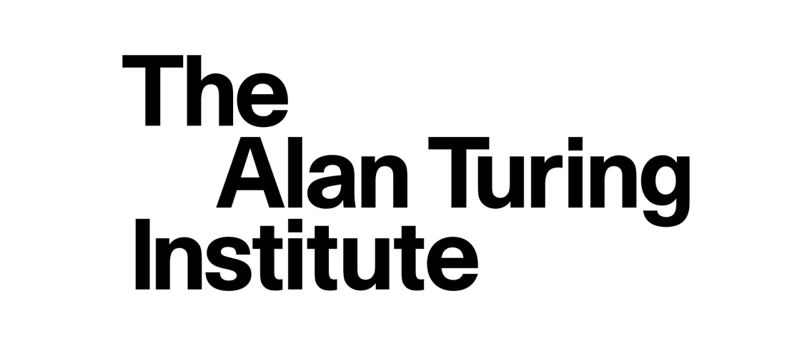
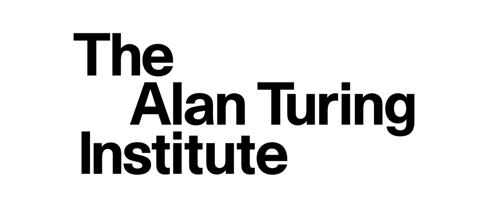

equadratures has been supported by numerous grants. It was founded through an Engineering and Physical Sciences Research Council (EPSRC) Knowledge Transfer Fellowship (KTF) from the Department of Engineering at the University of Cambridge in 2016. Since 2018, the project has been supported by Wave 1 of The UKRI Strategic Priorities Fund under the EPSRC Grant EP/T001569/1, particularly the Digital twins for aeronautics theme within that grant, and by the Lloyd’s Register Foundation-Alan Turing Institute programme on Data-Centric Engineering under the LRF grant G0095. The project is also grateful to the financial support of Jesus College Cambridge and the
 


copyright © 2022 by equadratures.
made by the equadratures team, with ❤️.
made by the equadratures team, with ❤️.